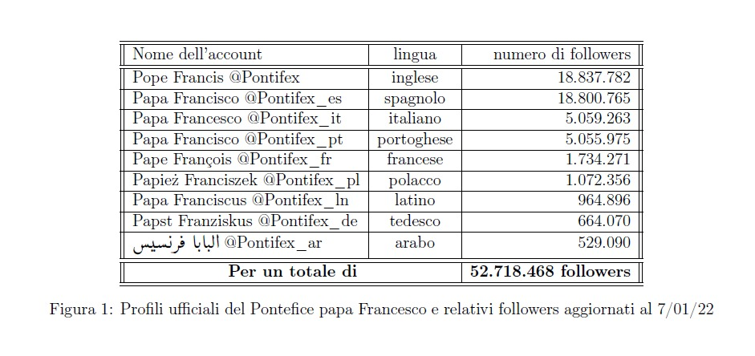

Corso di Globalizzazione e culture politiche · Università degli Studi Milano-Bicocca · LM Analisi dei Processi Sociali · 2021/2022

Questo progetto analizza la comunicazione religiosa online attraverso lo studio del profilo Twitter ufficiale del Papa (@pontifex_it), esplorando il rapporto tra cyberteologia e secolarizzazione.
Metodologia: Tramite il software statistico Stata e il comando twitter2stata, sono stati estratti 3.200 tweet dall'account @pontifex_it, sfruttando le API di Twitter a livello Elevated. Dal corpus totale sono stati selezionati i tweet con il maggior e il minor numero di like e retweet, combinando un'analisi quantitativa con un approfondimento qualitativo dei contenuti più rilevanti.
L'analisi ha indagato quali temi religiosi ottengono maggiore consenso online e in che misura la logica della rete influenzi e condizioni la comunicazione dei contenuti religiosi, con particolare attenzione all'assenza di temi sensibili come l'aborto e l'eutanasia nei contenuti digitali.